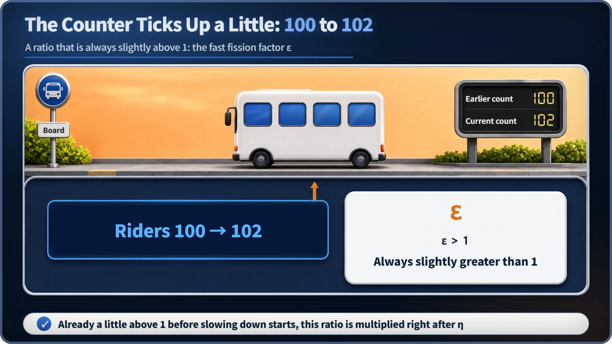

Neutron Physics & the Core · 088
A Few Passengers Hop On Before the Doors Close — The Bonus Riders of the Fast Fission Factor
Before slowing down even begins, some fast neutrons split uranium-238 and add a few more neutrons to the crowd.
Some neutrons add to their own numbers before they even start slowing down. While still fast, above roughly 1.1 MeV, they can split uranium-238, and each extra fission releases more neutrons. The fast fission factor ε measures that bonus: it is always slightly greater than 1, and it is a different thing from the resonance escape probability. [1]
Riders who jump on at the last second
Picture a bus at a stop during the evening rush. Just as the driver is about to close the doors and pull away, a few people come running from down the street and squeeze in through the gap, waving and shouting "Wait, wait!" So the bus leaves with a few more passengers than it had a moment ago, and it does so before it has even reached the stretch between stops, where it slows down and speeds up again.
Funnily enough, the neutrons born inside a reactor go through almost exactly the same thing. Take a crowd of neutrons fresh out of fission. Before they start slowing down by bumping into the moderator, while they are still "fast," a few of them quietly add to the crowd. The name for this "bonus boarding before departure" ratio is today's topic: the fast fission factor (ε).
Before slowing down even starts, the crowd has already grown
In a reactor, the step from one generation of neutrons to the next is often described with six factors, six gates (η, ε, P_FNL, p, P_TNL, f). The fast fission factor is the second of them: it comes right after the first gate, η (the reproduction factor), and before the other four (P_FNL, p, P_TNL, f), at a very early stage. Today we'll open up just this second gate.
When fission happens, new neutrons are born, but not all at the same speed. They come out with a fairly broad spread of energies (speeds). On average they move at a ferocious speed of around 20,000 kilometers per second, and some are born with even more energy than that.
Uranium-238, which makes up most of the uranium in reactor fuel, is a fussy character: it doesn't fission with just any neutron. Only a neutron with energy above a certain threshold (roughly 1.1 megaelectronvolts, MeV; different sources put it slightly differently) can make U-238 fission. And a good share of freshly born fast neutrons have energies above that threshold. [1]
So here's what happens. Before these neutrons hit the moderator, lose energy and slow down, some of them run into nearby U-238 first and trigger extra fissions. Each fission releases a few more new neutrons, so by the time the crowd enters the slowing-down stretch, it is already slightly bigger than it started. Just like a bus that picked up a few extra riders before it left the stop. [1]

In numbers: always a little more than 1
Written as a ratio, this "bonus rate" looks like this:
ε = (fast neutrons born from all fissions, thermal-neutron fissions plus fast-neutron fissions) ÷ (fast neutrons that would be born if there were only thermal-neutron fissions)
It looks wordy, but the meaning is simple. Take the real neutron count, with the extra fissions in the fast range included, and divide it by a baseline that assumes no bonus at all. Because there is a bonus, this value is always greater than 1.
In the six-factor formula (with k∞ = η × ε × p × f as its infinite-medium part), ε is multiplied in right after η. It's also worth remembering that among the six gates, only η and ε can be greater than 1; the other four are all probabilities of 1 or less. The neutrons pass the two gates that add to their number first, then go through the gates that thin them out, one after another. [1] [2]
"Isn't that the same as the resonance escape probability?" The most common mix-up
Explain the fast fission factor and this question comes up a lot: "Isn't that similar to the resonance escape probability? They both involve U-238." Both do feature U-238, but when they happen and what the reaction does are close to opposite.
The fast fission factor belongs to a very early stage, when neutrons are still fast, above the threshold energy, and not yet slowed down, and U-238 actually fissions and adds neutrons. In bus terms, it's the moment riders hop on just before the bus leaves, before it reaches the slowing-down stretch. The resonance escape probability, by contrast, is the probability that neutrons, after slowing down a long way by bumping into the moderator, get through a much lower intermediate energy range without simply being absorbed (captured) by U-238 and lost. That's a completely different event, one the bus meets well after it has entered the slowing-down stretch. One is about growing before slowing down; the other is about how well losses are avoided during slowing down. Same actor (U-238), different scenes. [1]
Another common mistake is to read ε as "how quickly neutrons slow down." ε has nothing to do with the speed of slowing down. It is simply a multiplier for how many extra fissions happen before slowing down begins, a separate matter from how fast or slow the slowing-down process itself is.
A bonus that depends on how the fuel is arranged
This bonus rate also depends on how the fuel and moderator are arranged. It tends to be larger when the fuel rods are bundled together and kept somewhat apart from the moderator (such as the cooling water), as in most of today's nuclear plants, than when fuel and moderator are evenly mixed. A freshly born fast neutron gets more chances to meet the clustered U-238 nuclei before it escapes into the moderator. It's like a bus stop: the bigger the crowd waiting there, the more people manage to jump on just before the doors close. [2]
Exactly how large this value is in a real commercial reactor, though, depends on design details such as fuel-rod diameter, the spacing of the fuel assemblies and the enrichment, so I won't state a specific figure for any particular reactor type here.
This value isn't something operators adjust in real time while the reactor runs normally. Operating actions such as moving control rods in and out or adjusting the boron concentration mainly affect a different gate (f, the thermal utilization factor). ε is closer to a design-stage property, already fixed when the core structure, such as fuel-rod thickness and layout, is decided. A larger ε doesn't automatically make a reactor more dangerous, and a smaller one doesn't automatically make it safer. What matters in the end is designing the whole system so that the product of all six gates balances near 1.
Today's one-line takeaways
- The fast fission factor (ε) is a "bonus multiplier" that accounts for extra fissions, in U-238 and elsewhere, caused by neutrons while they are still fast, before slowing down.
- It is always slightly greater than 1; of the six factors (η, ε, P_FNL, p, P_TNL, f), only η and ε exceed 1.
- It is not the resonance escape probability (p): ε is fission in the fast range before slowing down (a gain), while p is avoiding capture in the resonance range during slowing down (dodging a loss). The timing and the outcome both differ.
- ε has nothing to do with how fast neutrons slow down; it is a design-stage property that depends on the fuel and moderator arrangement, especially bundling fuel rods together.
- ε alone does not decide a reactor's safety; what matters is whether the product of all six gates is near 1.